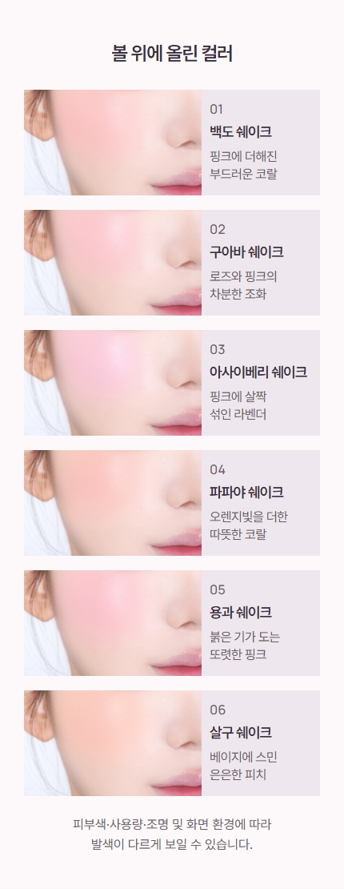
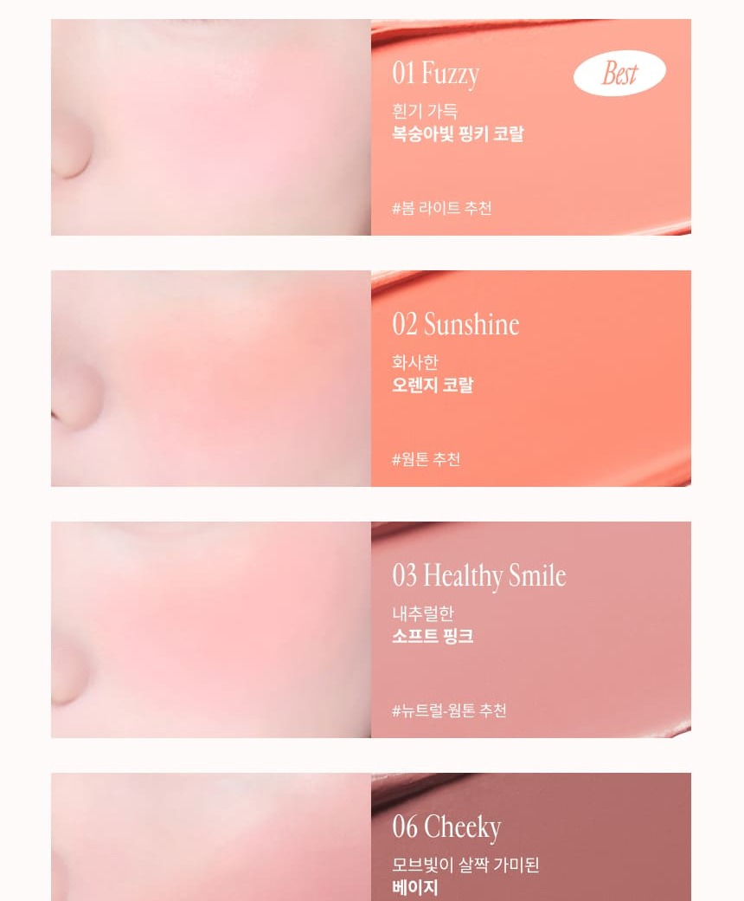

제목은 ‘컬러별 발색’으로 간결하게 바꾸고, 컬러명보다 설명을 작게 내렸습니다. 430px 원본 기준 컬러명18px·설명15px, 390px 화면에서는 약16.3px·13.6px입니다.

프레시안은 확보해 둔 상세 이미지에서 ‘Blush Color Shades’를 사용하고 컬러명 아래 설명을 작게 배치했습니다. 리리뮤 공식 페이지는 ‘COLORS’와 ‘SWATCH’를 사용합니다. 이를 참고해 탐뷰티에는 짧은 한글 정보형 제목을 적용했습니다. 크기 수치는 탐뷰티 화면에 맞춘 자체 조정입니다.
2026-10-20 확보한 상세 이미지 재확인. 이번 실시간 페이지 조회는 실패했습니다.

2026-10-21 공식 페이지 본문 확인: COLORS / SWATCH.
이 비교는 제목과 정보 위계를 위한 참고입니다. 판매량이나 특정 글자 크기의 효과를 입증하는 자료는 아닙니다.